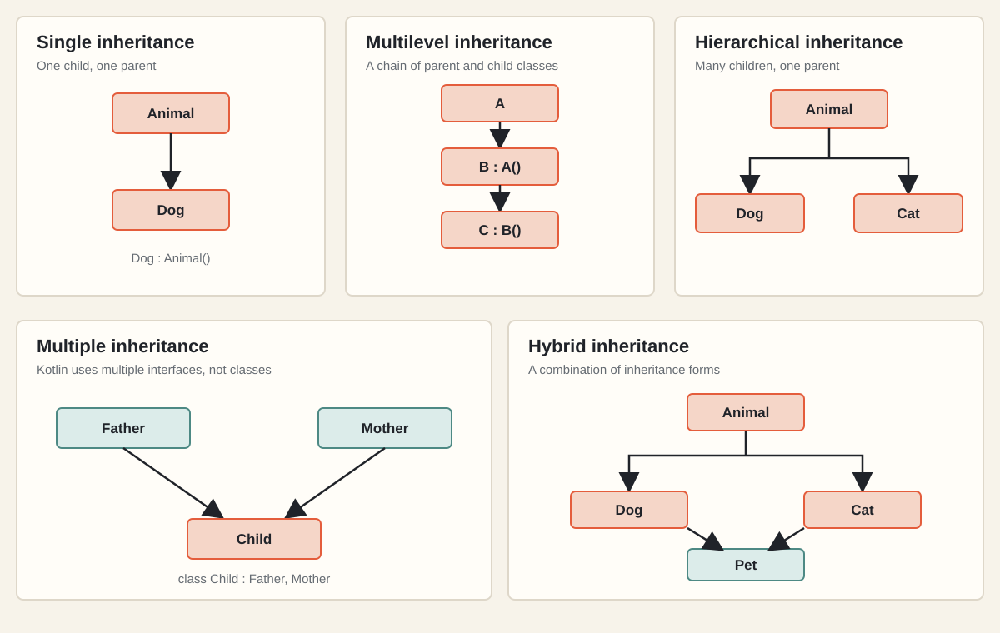

1.1 Introduction to Kotlin
Features, History of the Kotlin programming language.
1.2 Basic Syntax and Structure
Kotlin Basic Syntax and Structure.
1.3 Control Flow in Kotlin
Control flow statements in Kotlin.
1.4 Exception Handling in Kotlin
Try, Catch, Finally and Throw statements
1.5 Functions in Kotlin
Declare functions, return values, and use default parameters.
1.6 OOP in Kotlin
Use Kotlin classes, objects, and inheritance.
Assignment
Review Unit 1 with these Kotlin questions.
1.1 Introduction to Kotlin
Kotlin is a modern, free, open-source programming language made by a company called JetBrains. It is statically typed, meaning the type of every variable (number, text, and so on) is known when the code is compiled. It runs on the Java Virtual Machine (JVM), so it works with existing Java code. Google has made it the preferred language for Android development.
1.1.1 Overview of Kotlin's Features
1. Concise (less code)
Kotlin removes a lot of boilerplate, or repeated and unnecessary code. The same program is usually much shorter than in Java.
fun main() {
println("Hello, Android!")
}2. Null safety
The famous Java problem is the NullPointerException, where an app crashes because a variable holds nothing. Kotlin addresses this at compile time.
var name: String = "Ram" // cannot be null
var nick: String? = null // ? means it can be null
println(nick?.length) // safe call: prints null
println(nick?.length ?: 0) // Elvis operator: use 0 if null3. Type inference
Kotlin can guess the type from a value, so you do not always have to write it.
val age = 20 // Kotlin knows this is Int
val city = "Kathmandu" // Kotlin knows this is String4. val and var
val is read-only after it is set. var can be changed later. Using val wherever possible makes programs safer and easier to understand.
5. Full Java interoperability
Kotlin and Java can be used in the same project. You can call Java code from Kotlin and Kotlin code from Java, letting teams move to Kotlin gradually without rewriting everything.
6. Data classes
One line creates a class that automatically gets useful methods such as toString(), equals(), hashCode(), and copy().
data class Student(val name: String, val age: Int)7. Extension functions
You can add new functions to an existing class without changing its source code.
fun String.shout() = this.uppercase() + "!"
println("hello".shout()) // HELLO!8. Smart casts
After Kotlin checks a type, it automatically treats the variable as that type.
fun show(x: Any) {
if (x is String) println(x.length) // no manual cast needed
}9. Default and named arguments
fun greet(name: String, greeting: String = "Hello") = "$greeting, $name"
greet("Sita")
greet(greeting = "Namaste", name = "Sita")10. String templates
Put variables directly inside text using the $ symbol.
println("$name is $age years old")11. Powerful when expression
when is a cleaner and more powerful replacement for Java's switch.
val result = when (marks) {
in 80..100 -> "Distinction"
in 40..79 -> "Pass"
else -> "Fail"
}12. Lambdas and higher-order functions
Kotlin supports functional programming. Functions can be passed around like values, which is heavily used in Android for button click listeners and similar callbacks.
button.setOnClickListener { println("Clicked!") }13. Coroutines
Coroutines make it simple to run long tasks such as network calls and database work in the background without freezing the app's screen. This matters in Android because the main thread must stay responsive.
14. Object-oriented and functional
Kotlin supports classes, inheritance, and interfaces alongside functional-style code, so you can mix both approaches.
15. Multiplatform support
Kotlin can target more than Android:
- JVM: servers and desktop applications
- JavaScript: web applications
- Native: iOS, Windows, Linux, and macOS
- Kotlin Multiplatform: shared code between Android and iOS
16. Great tool support
Kotlin is made by the same company that makes IntelliJ IDEA, and Android Studio is built on IntelliJ. Editing, debugging, and auto-suggestions therefore work smoothly together.
1.1.2 History of the Kotlin Language
Why was it created?
Around 2010, JetBrains developers were using Java but found it verbose and limited. They looked at languages such as Scala but found problems including slow compile times, so they decided to build their own language. The project was led by Andrey Breslav.
The name
Kotlin is named after Kotlin Island, near St. Petersburg in Russia, where many JetBrains developers lived. This follows the idea behind Java, which is named after an Indonesian island.
Timeline
| Year | Event |
|---|---|
| 2010 | JetBrains starts work on a new language called Project Kotlin. |
| July 2011 | Kotlin is publicly announced. |
| 2012 | Kotlin is released as open source under the Apache 2.0 licence. |
| 15 Feb 2016 | Kotlin 1.0, the first stable release. |
| May 2017 | At Google I/O, Google announces official support for Kotlin on Android. |
| Oct 2017 | Android Studio 3.0 ships with Kotlin support built in. |
| Oct 2018 | Kotlin 1.3: coroutines become stable. |
| May 2019 | Google declares Android development Kotlin-first. |
| 2021 | Jetpack Compose reaches stable 1.0. |
| May 2024 | Kotlin 2.0 arrives with the new K2 compiler. |
1.1.3 Why Kotlin over Java
Java is stable and established, but Kotlin was designed to address many of Java's legacy limitations. For modern Mobile Application Development, Kotlin is preferred for several structural reasons.
| Feature / aspect | Java | Kotlin |
|---|---|---|
| Code verbosity | Requires explicit getters, setters, and constructors for basic data models. | data class declarations handle boilerplate in one line. |
| Null safety | Variables can freely hold null, making apps prone to runtime NPE crashes. | Nullable types are explicitly marked with ? and checked at compile time. |
| Type declaration | Explicit typing is usually required, such as String name = "Student"; | Type inference allows val name = "Student". |
| Asynchronous execution | Traditional threads or external libraries can be heavy and complex. | Coroutines are lightweight and native to the language. |
| Extensibility | Usually requires inheritance or separate utility classes. | Extension functions add behavior directly to existing classes. |
| Exception handling | Checked exceptions can require repetitive try-catch blocks. | No checked exceptions, keeping application code cleaner. |
1.2 Basic Syntax and Structure
1.2.1 Variables and Data Types
What is a variable?
A variable is a named container in memory that stores a value. In Kotlin, you declare one with either val or var.
val | var |
|---|---|
| Read-only; the value is assigned once. | Mutable; the value can change. |
Similar to final in Java. | Similar to a normal variable in Java. |
| Reassignment is not allowed. | Reassignment is allowed. |
val pi = 3.14159
// pi = 3.14 // ERROR: val cannot be reassigned
var age = 20
age = 21 // OKBasic variable syntax is val/var variableName: DataType = value.
val name: String = "Ram"
var marks: Int = 85Built-in data types
In Kotlin, everything is an object. There are no separate primitive types like Java's int; the compiler optimizes values automatically.
| Type | Size | Range / precision |
|---|---|---|
Byte | 8 bit | -128 to 127 |
Short | 16 bit | -32,768 to 32,767 |
Int | 32 bit | About -2.1 billion to 2.1 billion |
Long | 64 bit | About +/-9.2 x 10^18 |
Float | 32 bit | About 6-7 decimal digits |
Double | 64 bit | About 15-16 decimal digits |
| Type | Stores | Example |
|---|---|---|
Boolean | true or false | val isPass = true |
Char | A single character | val grade = 'A' |
String | Text; immutable | val city = "Kathmandu" |
val a: Int = 25
val b: Long = 5_000_000_000L // L suffix for Long
val c: Float = 3.14f // f suffix for Float
val d: Double = 3.14159265
val e: Char = 'K'
val f: Boolean = false
val million = 1_000_000 // underscores improve readability
val hex = 0xFF // hexadecimal = 255
val bin = 0b1010 // binary = 10You can inspect an inferred type with:
val n = 42
println(n::class.simpleName)Nullable types
By default, variables cannot hold null. Add ? to allow it.
var a: String = "Hello"
// a = null // ERROR
var b: String? = "Hello"
b = null // OK1.2.2 Type Inference
Kotlin automatically figures out a variable's data type from the value assigned to it. You only need to write the type explicitly when a variable is declared without an immediate initial value.
val name = "Sita" // compiler infers String
val age = 22 // Int
val height = 5.6 // Double
val isStudent = true // Boolean
val grade = 'A' // Char| Value written | Inferred type |
|---|---|
10 | Int |
3_000_000_000 (too big for Int) | Long |
10L | Long |
3.14 | Double |
3.14f | Float |
'A' | Char |
"Hi" | String |
true / false | Boolean |
Inference in functions
fun square(x: Int) = x * x // return type Int inferred
fun greet(name: String) { // block body with no return: Unit
println("Hi $name")
}
fun cube(x: Int): Int { // block body with a return must declare the type
return x * x * x
}1.2.3 Type Casting
Casting converts one object type into another. Kotlin provides smart, unsafe, and safe casting mechanisms.
Smart casts with is
After checking an object's type with is, Kotlin automatically treats it as that type inside the block.
fun printLength(obj: Any) {
if (obj is String) {
println(obj.length)
}
}Unsafe and safe casts
as forces a cast and throws ClassCastException if the object has the wrong type. as? attempts a cast and returns null if it fails.
val obj: Any = "Kotlin"
val str: String = obj as String // Works fine
val numObj: Any = 123
// val strFail: String = numObj as String // ClassCastException
val safeStr: String? = numObj as? String // Returns null| Keyword | Purpose |
|---|---|
is | Checks the type and returns true or false. |
as | Unsafe cast; throws ClassCastException if wrong. |
as? | Safe cast; returns null if wrong. |
Conversion functions
For numbers and basic types, use conversion functions such as toByte(), toShort(), toInt(), toLong(), toFloat(), toDouble(), toChar(), and toString().
1.2.4 Collections in Kotlin
A collection stores a group of related items. Kotlin provides read-only and mutable versions of its main collection types.
| Collection | Read-only | Mutable |
|---|---|---|
| List | listOf() | mutableListOf() |
| Set | setOf() | mutableSetOf() |
| Map | mapOf() | mutableMapOf() |
Lists
Lists are ordered collections that allow duplicate items. Elements are accessed by index, starting at 0.
val subjects = listOf("Math", "Physics", "Math")
println(subjects[0]) // Output: Math
val dynamicList = mutableListOf("Java")
dynamicList.add("Kotlin")Sets
Sets are unordered collections containing unique elements. Adding a duplicate has no effect.
val uniqueNumbers = setOf(1, 2, 2, 3)
println(uniqueNumbers) // Output: [1, 2, 3]
val activeUsers = mutableSetOf("Alice", "Bob")
activeUsers.add("Alice") // Ignored, already existsMaps (dictionaries)
Maps store key-value pairs. Keys must be unique, although multiple keys can point to the same value.
val grades = mapOf("Alice" to "A", "Bob" to "B")
println(grades["Alice"]) // Output: A
val inventory = mutableMapOf("Laptops" to 10)
inventory["Monitors"] = 5 // Adds a new key-value pair1.3 Control Flow in Kotlin
1.3.1 Conditional Statements
Kotlin provides if and when to control the flow of your program based on conditions.
1. if / else if / else
This works like in Java or C++, executing code blocks based on boolean conditions.
val temperature = 25
if (temperature > 30) {
println("It's hot outside.")
} else if (temperature > 20) {
println("The weather is nice.")
} else {
println("It's cold.")
}if as an expression:
val a = 10
val b = 20
// The last line of the block is the returned value
val max = if (a > b) a else b2. when expression
when replaces the switch statement found in other languages. It is more concise and powerful.
val dayNumber = 3
when (dayNumber) {
1 -> println("Monday")
2 -> println("Tuesday")
3 -> println("Wednesday")
4, 5 -> println("Thursday or Friday") // Grouping multiple cases
in 6..7 -> println("Weekend!") // Checking ranges
else -> println("Invalid day") // 'else' acts like 'default'
}1.3.2 Loops
Loops are used to repeatedly execute a series of statements until a specified/given condition is met, or the loop is broken with the break statement. Kotlin provides mainly four types of loops: for, while, do-while and forEach loops to repeat code.
1. for loops
The for loop in Kotlin iterates through anything that provides an iterator, such as arrays, lists, or ranges. A for loop is a condition iterative statement that checks for a specific condition and then constantly executes a block of code as long as those criteria are met.
Iterating over ranges:
// Prints 1, 2, 3, 4, 5 (inclusive)
for (i in 1..5) {
println(i)
}
// Prints 1, 2, 3, 4 (excludes the last number)
for (i in 1 until 5) {
println(i)
}
// Counting downwards: Prints 5, 4, 3, 2, 1
for (i in 5 downTo 1) {
println(i)
}
// Skipping numbers: Prints 1, 3, 5
for (i in 1..5 step 2) {
println(i)
}Iterating over collections (arrays/lists):
val fruits = listOf("Apple", "Banana", "Cherry")
for (fruit in fruits) {
println(fruit)
}2. while loops
While loops are used to repeatedly cycle a block of code as long as the specified condition returns true. The condition is verified first, and if it is true, then block of code is run.
var count = 5
while (count > 0) {
println(count)
count-- // Decreases count by 1
}
// Prints: 5, 4, 3, 2, 13. do-while loop
The do-while loop executes the code first, and then checks the condition. This guarantees that the loop will run at least once, even if the condition is false.
var number = 10
do {
println("This prints at least once!")
number++
} while (number < 5)
// The condition is false, but it still printed the message once.4. forEach loop
The forEach method in Kotlin allows you to access elements in a collection or list and perform actions on them.
var arr1 = listOf("Suman", "Rahul", "Rajesh")
arr1.forEach{
println("Mr. ${it}")
}
val fruits = listOf("Apple", "Banana", "Cherry")
fruits.forEach { fruit ->
println(fruit)
}
1.4 Exception Handling in Kotlin
Exception handling is a technique which handles the runtime problems and maintains the flow of the program execution. There are four different keywords used in exception handling. They are: try, catch, finally, and throw.
1. try, catch, and finally
These three blocks work together to test code, handle errors, and execute cleanup tasks.
try: Contains the code that might throw an exception.catch: Contains the code that runs if a specific exception is thrown inside thetryblock. You can have multiplecatchblocks.finally: An optional block that always executes, whether an exception occurred or not. It is typically used for closing files, database connections, or cleaning up resources.
Basic example:
fun divideNumbers(a: Int, b: Int) {
try {
val result = a / b
println("Result: $result")
} catch (e: ArithmeticException) {
println("Error: Cannot divide by zero!")
} finally {
println("Calculation attempt finished.")
}
}val number = try {
"10A".toInt()
} catch (e: NumberFormatException) {
0 // Fallback value if an error occurs
}2. throw
The throw keyword is used to manually trigger an exception when a specific error condition is met in your logic.
Example:
fun checkAge(age: Int) {
if (age < 18) {
throw IllegalArgumentException("Age must be 18 or older.")
}
println("Access granted.")
}1.5 Functions in Kotlin
A function in Kotlin is a reusable block of code designed to perform a single, specific task. Functions are declared using the fun keyword, followed by the function name, parameters in parentheses, an optional return type, and the function body enclosed in curly braces.
Advantages:
- Reusability: Write code once and call it multiple times.
- Modularity: Break down complex problems into smaller, manageable, and testable pieces.
- Readability: Well-named functions make the main codebase read more like natural language.
Function Declaration and Parameters
A function declaration includes the fun keyword, the function name, and any parameters needed by the function. Parameters are written as name: Type pairs inside the parentheses.
fun greet(name: String) {
println("Hello, $name!")
}Return Types
The return type dictates the specific type of data, such as Int, String, or Boolean, that a function passes back to its caller.
- Explicit return type: Defined after the parameter list and separated by a colon. The function uses the
returnkeyword to send back a value of that type. Unit(no return value): Used when a function does not return a useful value. It is equivalent tovoidin Java or C, and the: Unitdeclaration is usually omitted.- Single-expression functions: When a function contains one expression, you can omit the curly braces, the
returnkeyword, and the explicit return type. Kotlin infers the return type using the=operator.
// Explicit return type
fun calculateArea(length: Int, width: Int): Int {
return length * width
}
// Single-expression function; return type Int is inferred
fun calculatePerimeter(length: Int, width: Int) = 2 * (length + width)Default Values in Parameters
Kotlin allows you to assign a default value to a function parameter. If a caller invokes the function without providing an argument for that parameter, Kotlin automatically uses the default value.
Advantages:
- Eliminates overloading: Replaces the need to write multiple versions of the same function with different parameter counts.
- Cleaner calls: Simplifies function calls when standard baseline configurations are acceptable.
- Named arguments: When combined with named arguments, you can skip intermediate default parameters and change only the values you need.
// 'role' has a default value of "User"
fun createUser(username: String, role: String = "User") {
println("Created $role: $username")
}
// Usage
createUser("alice_99") // Output: Created User: alice_99
createUser("admin_bob", "Admin") // Output: Created Admin: admin_bob1.5.1 Lambda Expressions in Kotlin
Introduction
A lambda expression is a short way of writing a function without explicitly declaring a function name. A lambda is an anonymous function that can be stored in a variable, passed as an argument, or returned from another function.
Lambda expressions are especially useful when we need to pass a small piece of behavior to another function. They are common in collection operations such as filter and map, and in Android callbacks such as click listeners.
Example
First, write the operation as a normal function:
fun add(a: Int, b: Int): Int {
return a + b
}The same operation can be written using a lambda:
val add = { a: Int, b: Int -> a + b }
println(add(2, 3)) // 5Here:
aandbare parameters.->separates the parameters from the lambda body.a + bis the result of the lambda; the last expression is returned automatically.addstores the lambda and can be called like a function.
Use RAT to see how a named function becomes a lambda:
fun sum(a: Int, b: Int): Int {
return a + b
}
// R: Remove the function name and fun keyword
(a: Int, b: Int): Int {
return a + b
}
// A: Replace the return type and return syntax with an arrow
(a: Int, b: Int) -> {
a + b
}
// T: Throw parentheses around the lambda body
{ a: Int, b: Int ->
a + b
}Type inference and the implicit it parameter
Kotlin can often infer parameter and return types from context. A lambda with one parameter can also use the implicit name it. Use an explicit parameter name when it makes the code clearer.
val numbers = listOf(1, 2, 3, 4)
val doubled = numbers.map { it * 2 }
val even = numbers.filter { number -> number % 2 == 0 }val, pass it to a function, or return it when you want to make behavior reusable and configurable.1.5.2 Higher-Order Functions in Kotlin
Introduction
A higher-order function is a function that takes another function as a parameter, returns a function, or does both.
Kotlin treats functions as first-class citizens. This means functions can be stored in variables, passed as arguments, and returned from other functions just like values such as numbers or strings.
Passing a function as a parameter
In the example below, operation is a function parameter. The type (Int, Int) -> Int describes a function that takes two Int values and returns an Int.
fun calculate(
a: Int,
b: Int,
operation: (Int, Int) -> Int
): Int {
return operation(a, b)
}
val sum = calculate(10, 5) { x, y -> x + y }
val difference = calculate(10, 5) { x, y -> x - y }
println(sum) // 15
println(difference) // 5operationis a function parameter.(Int, Int) -> Intmeans the function takes twoIntvalues and returns anInt.operation(a, b)invokes the function passed tocalculate.- The same
calculatefunction can perform different operations.
Returning a function
A higher-order function can also create and return another function. The returned function remembers the value captured from its surrounding scope; this is called a closure.
fun makeMultiplier(factor: Int): (Int) -> Int {
return { number -> number * factor }
}
val triple = makeMultiplier(3)
println(triple(4)) // 12Here, makeMultiplier returns a function of type (Int) -> Int. The returned lambda captures factor, so triple continues to use the value 3 after makeMultiplier has finished.
makeMultiplier(3) sets factor to 3 and returns a function that behaves like { number -> number * 3 }. Therefore, triple stores that function. Step 2: triple(4) sets number to 4, so the function calculates 4 * 3 = 12.Common Kotlin examples
Many Kotlin standard-library functions are higher-order functions. They accept lambdas to describe what should happen to each item.
val numbers = listOf(1, 2, 3, 4, 5)
val squares = numbers.map { number -> number * number }
val evenNumbers = numbers.filter { it % 2 == 0 }
println(squares) // [1, 4, 9, 16, 25]
println(evenNumbers) // [2, 4]Android also uses this pattern for event callbacks, such as passing a lambda to setOnClickListener to define what should happen when a button is tapped.
1.6 Object-Oriented Programming
Object-Oriented Programming (OOP) models real-world entities in code. The two foundational building blocks are classes and objects.
1.6.1 Classes and Objects
Class
A class is a logical blueprint, template, or prototype used to create objects. It defines the properties (data) and member functions (behavior) that its objects share. A class itself does not represent a specific entity.
Object
An object is a runtime instance of a class. It represents a specific real-world entity, holds actual data values in memory, and can execute the functions defined by its class.
Student class is like an empty admission form defining fields such as name, age, and roll number. Each filled-out form for an individual student, such as Ram or Sita, is an object.Class syntax in Kotlin
A Kotlin class is a user-defined data type declared with the class keyword. It encapsulates properties and operations into one reusable unit.
class ClassName {
// Properties (variables)
// Member functions (methods)
}- Blueprint for objects: Defines the common structure and behavior for its instances.
- Encapsulation: Bundles properties and member functions together.
- Constructors: Initializes object properties when an object is created.
- Inheritance and interfaces: Supports inheriting from open classes and implementing interfaces.
- Code reusability: Organizes code into modular, reusable components.
Creating and using an object
In Kotlin, create an object by calling the class constructor directly. Unlike Java, Kotlin does not use the new keyword. Use the dot (.) operator to access properties and call member functions.
class Student {
var name: String = "Ram"
var age: Int = 20
fun displayDetails() {
println("Name: $name")
println("Age: $age")
}
}
fun main() {
val student1 = Student()
student1.displayDetails()
}val student1 = Student() creates an object of the Student class, and student1.displayDetails() calls its member function.
Output:
Name: Ram
Age: 20Class and object: difference
| Basis | Class | Object |
|---|---|---|
| Definition | A blueprint or template used to create objects. | A real-world instance of a class. |
| Nature | Logical or abstract structure. | Physical or concrete realization. |
| Memory | Defines the structure; it is not an individual instance. | Stores actual property values in memory. |
| Declaration | Created using the class keyword. | Created by calling the class constructor, such as ClassName(). |
| Data | Defines what properties an object can have. | Holds actual values for those properties. |
1.6.2 Constructors, Inheritance and Polymorphism
Constructors in Kotlin
A constructor is a special part of a class that is invoked automatically when an object is created. Its primary purpose is to initialize the class properties. Kotlin has two types of constructors: primary and secondary.
Primary constructor
A primary constructor is declared directly in the class header after the class name. Parameters marked with val or var automatically become class properties. A primary constructor cannot contain executable statements directly; use an init block for initialization logic.
class Student(val name: String, var age: Int) {
init {
println("Student created: $name")
}
}
val student = Student("Ram", 20)Secondary constructor
A secondary constructor is declared inside the class body with the constructor keyword. It is useful when a class needs multiple ways to initialize objects. If a class has a primary constructor, every secondary constructor must delegate to it directly or indirectly using this(...).
class Person(val name: String) {
var age: Int = 0
constructor(name: String, age: Int) : this(name) {
this.age = age
}
}
val person = Person("Sita", 21)Inheritance in Kotlin
Inheritance is an OOP mechanism in which one class acquires the properties and behaviors of another class. It promotes code reuse. Kotlin uses the : symbol for inheritance.
- Parent class (superclass): The class whose members are inherited.
- Child class (subclass): The class that inherits members.
openkeyword: Classes and methods are final by default, soopenis required to allow inheritance or overriding.
open class Animal {
fun eat() {
println("Animal is eating")
}
}
class Dog : Animal() {
fun bark() {
println("Dog is barking")
}
}
fun main() {
val dog = Dog()
dog.eat()
dog.bark()
}Here, Animal is the parent class and Dog is the child class. The Dog object can use the inherited eat() function as well as its own bark() function.
Output:
Animal is eating
Dog is barkingTypes of inheritance
- Single inheritance: One child class inherits from one parent class.
- Multilevel inheritance: A class inherits from a child class, forming a chain such as
A → B → C. - Hierarchical inheritance: Multiple child classes inherit from the same parent class.
- Multiple inheritance: Kotlin does not allow a class to inherit from multiple classes, but a class can implement multiple interfaces.
- Hybrid inheritance: A combination of inheritance forms, created in Kotlin using classes and interfaces because multiple class inheritance is not supported.

interface Father {
fun fatherFeature() {
println("Father's feature")
}
}
interface Mother {
fun motherFeature() {
println("Mother's feature")
}
}
class Child : Father, MotherPolymorphism in Kotlin
Polymorphism means “many forms.” It allows one function name or interface to behave differently depending on the parameters passed or the object invoking it. Kotlin supports compile-time polymorphism through overloading and run-time polymorphism through overriding.
Compile-time polymorphism: method overloading
Method overloading occurs when functions in the same class have the same name but different parameter lists. The compiler decides which function to call based on the number, type, or order of the arguments.
class Calculator {
fun add(a: Int, b: Int) = a + b
fun add(a: Int, b: Int, c: Int) = a + b + c
fun add(a: Double, b: Double) = a + b
}
fun main() {
val calc = Calculator()
println(calc.add(5, 10)) // 15
println(calc.add(5, 10, 15)) // 30
println(calc.add(2.5, 3.5)) // 6.0
}Run-time polymorphism: method overriding
Method overriding occurs when a subclass provides a specific implementation for a function already defined in its superclass. The parent function must be marked open, and the child function must use override. The implementation is selected at run time based on the actual object type.
open class Animal {
open fun makeSound() {
println("Animal makes a generic sound")
}
}
class Dog : Animal() {
override fun makeSound() {
println("Dog barks: Woof!")
}
}
class Cat : Animal() {
override fun makeSound() {
println("Cat meows: Meow!")
}
}
fun main() {
val myPet1: Animal = Dog()
val myPet2: Animal = Cat()
myPet1.makeSound()
myPet2.makeSound()
}Output:
Dog barks: Woof!
Cat meows: Meow!Overloading vs. overriding
| Basis | Method overloading | Method overriding |
|---|---|---|
| Polymorphism type | Compile-time (static). | Run-time (dynamic). |
| Scope | Occurs within the same class. | Occurs between a superclass and subclass. |
| Parameters | Must differ in count, type, or order. | Must have the same name and signature. |
| Keywords | No special keywords are required. | Requires open in the parent and override in the child. |
| Purpose | Supports similar operations with different inputs. | Provides a specific implementation of inherited behavior. |